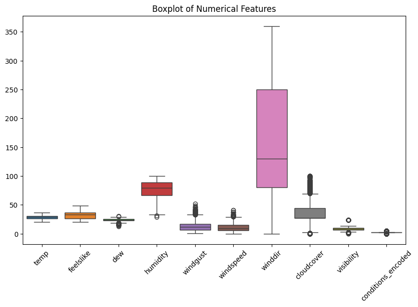
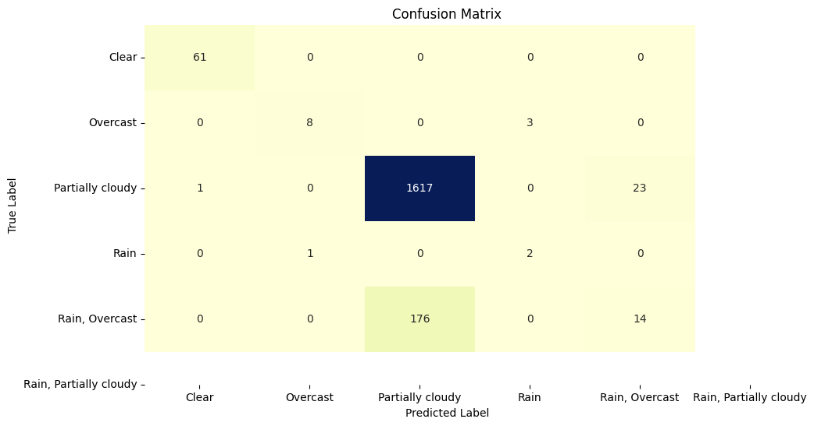

import pandas as pd
import numpy as np
import matplotlib.pyplot as plt
import seaborn as sns
from sklearn.metrics import mean_squared_error, mean_absolute_percentage_error
df = pd.read_csv('https://raw.githubusercontent.com/Rieko00/psd/main/Cuaca1th_2.csv',sep=';')
df
| name | datetime | temp | feelslike | dew | humidity | precip | precipprob | preciptype | snow | ... | sealevelpressure | cloudcover | visibility | solarradiation | solarenergy | uvindex | severerisk | conditions | icon | stations | |
|---|---|---|---|---|---|---|---|---|---|---|---|---|---|---|---|---|---|---|---|---|---|
| 0 | surabaya | 2023-09-01T00:00:00 | 26.0 | 26.0 | 21.0 | 73.97 | 0.0 | 0 | NaN | 0 | ... | 1012.0 | 27.4 | 10.0 | 0 | 0.0 | 0 | 10 | Partially cloudy | partly-cloudy-night | WARR,96935599999 |
| 1 | surabaya | 2023-09-01T01:00:00 | 26.3 | 26.3 | 22.6 | 80.56 | 0.0 | 0 | NaN | 0 | ... | 1012.4 | 44.5 | 7.7 | 0 | 0.0 | 0 | 10 | Partially cloudy | partly-cloudy-night | WARR,96933099999,96935099999,96935599999 |
| 2 | surabaya | 2023-09-01T02:00:00 | 24.0 | 24.0 | 21.0 | 83.34 | 0.0 | 0 | NaN | 0 | ... | 1011.0 | 27.4 | 5.0 | 0 | 0.0 | 0 | 10 | Partially cloudy | partly-cloudy-night | WARR,96935599999 |
| 3 | surabaya | 2023-09-01T03:00:00 | 24.0 | 24.0 | 21.0 | 83.34 | 0.0 | 0 | NaN | 0 | ... | 1011.0 | 27.4 | 5.0 | 0 | 0.0 | 0 | 10 | Partially cloudy | partly-cloudy-night | WARR,96935599999 |
| 4 | surabaya | 2023-09-01T04:00:00 | 23.3 | 23.3 | 21.5 | 89.80 | 0.0 | 0 | NaN | 0 | ... | 1011.3 | 34.9 | 5.0 | 0 | 0.0 | 0 | 10 | Partially cloudy | partly-cloudy-night | WARR,96935099999,96935599999 |
| ... | ... | ... | ... | ... | ... | ... | ... | ... | ... | ... | ... | ... | ... | ... | ... | ... | ... | ... | ... | ... | ... |
| 9523 | surabaya | 2024-10-01T19:00:00 | 31.0 | 35.4 | 22.9 | 62.01 | 0.0 | 0 | NaN | 0 | ... | 1009.3 | 48.0 | 9.0 | 0 | 0.0 | 0 | 10 | Partially cloudy | partly-cloudy-night | WARR,96935099999,96935599999 |
| 9524 | surabaya | 2024-10-01T20:00:00 | 30.3 | 34.3 | 22.8 | 64.19 | 0.0 | 0 | NaN | 0 | ... | 1010.5 | 56.4 | 8.3 | 0 | 0.0 | 0 | 10 | Partially cloudy | partly-cloudy-night | WARR,96933099999,96935099999,96935599999 |
| 9525 | surabaya | 2024-10-01T21:00:00 | 30.0 | 33.9 | 22.8 | 65.42 | 0.0 | 0 | NaN | 0 | ... | 1010.8 | 49.4 | 8.0 | 0 | 0.0 | 0 | 10 | Partially cloudy | partly-cloudy-night | WARR,96933099999,96935099999,96935599999 |
| 9526 | surabaya | 2024-10-01T22:00:00 | 28.4 | 32.6 | 23.9 | 76.38 | 0.0 | 0 | NaN | 0 | ... | 1010.3 | 44.7 | 8.0 | 0 | 0.0 | 0 | 10 | Partially cloudy | partly-cloudy-night | WARR,96935099999,96935599999 |
| 9527 | surabaya | 2024-10-01T23:00:00 | 29.5 | 34.6 | 24.2 | 73.19 | 0.0 | 0 | NaN | 0 | ... | 1010.7 | 46.5 | 8.0 | 0 | 0.0 | 0 | 10 | Partially cloudy | partly-cloudy-night | WARR,96933099999,96935099999,96935599999 |
9528 rows × 24 columns
df.info()
<class 'pandas.core.frame.DataFrame'>
RangeIndex: 9528 entries, 0 to 9527
Data columns (total 24 columns):
# Column Non-Null Count Dtype
--- ------ -------------- -----
0 name 9528 non-null object
1 datetime 9528 non-null object
2 temp 9528 non-null float64
3 feelslike 9528 non-null float64
4 dew 9528 non-null float64
5 humidity 9528 non-null float64
6 precip 9528 non-null float64
7 precipprob 9528 non-null int64
8 preciptype 1746 non-null object
9 snow 9528 non-null int64
10 snowdepth 9528 non-null int64
11 windgust 9528 non-null float64
12 windspeed 9528 non-null float64
13 winddir 9528 non-null float64
14 sealevelpressure 9528 non-null float64
15 cloudcover 9528 non-null float64
16 visibility 9528 non-null float64
17 solarradiation 9528 non-null int64
18 solarenergy 9528 non-null float64
19 uvindex 9528 non-null int64
20 severerisk 9528 non-null int64
21 conditions 9528 non-null object
22 icon 9528 non-null object
23 stations 9528 non-null object
dtypes: float64(12), int64(6), object(6)
memory usage: 1.7+ MB
df.drop(columns=['stations', 'icon', 'severerisk', 'uvindex', 'solarenergy', 'solarradiation', 'sealevelpressure', 'snowdepth', 'snow', 'preciptype', 'precipprob', 'precip', 'name', 'datetime'], inplace=True)
df
| temp | feelslike | dew | humidity | windgust | windspeed | winddir | cloudcover | visibility | conditions | |
|---|---|---|---|---|---|---|---|---|---|---|
| 0 | 26.0 | 26.0 | 21.0 | 73.97 | 18.0 | 3.6 | 140.0 | 27.4 | 10.0 | Partially cloudy |
| 1 | 26.3 | 26.3 | 22.6 | 80.56 | 14.4 | 6.9 | 158.0 | 44.5 | 7.7 | Partially cloudy |
| 2 | 24.0 | 24.0 | 21.0 | 83.34 | 11.2 | 7.6 | 220.0 | 27.4 | 5.0 | Partially cloudy |
| 3 | 24.0 | 24.0 | 21.0 | 83.34 | 8.6 | 3.6 | 180.0 | 27.4 | 5.0 | Partially cloudy |
| 4 | 23.3 | 23.3 | 21.5 | 89.80 | 6.5 | 4.8 | 247.0 | 34.9 | 5.0 | Partially cloudy |
| ... | ... | ... | ... | ... | ... | ... | ... | ... | ... | ... |
| 9523 | 31.0 | 35.4 | 22.9 | 62.01 | 28.4 | 23.5 | 120.0 | 48.0 | 9.0 | Partially cloudy |
| 9524 | 30.3 | 34.3 | 22.8 | 64.19 | 27.7 | 12.1 | 117.0 | 56.4 | 8.3 | Partially cloudy |
| 9525 | 30.0 | 33.9 | 22.8 | 65.42 | 22.0 | 8.1 | 113.0 | 49.4 | 8.0 | Partially cloudy |
| 9526 | 28.4 | 32.6 | 23.9 | 76.38 | 20.5 | 12.4 | 87.0 | 44.7 | 8.0 | Partially cloudy |
| 9527 | 29.5 | 34.6 | 24.2 | 73.19 | 16.9 | 4.4 | 90.0 | 46.5 | 8.0 | Partially cloudy |
9528 rows × 10 columns
df.info()
<class 'pandas.core.frame.DataFrame'>
RangeIndex: 9528 entries, 0 to 9527
Data columns (total 10 columns):
# Column Non-Null Count Dtype
--- ------ -------------- -----
0 temp 9528 non-null float64
1 feelslike 9528 non-null float64
2 dew 9528 non-null float64
3 humidity 9528 non-null float64
4 windgust 9528 non-null float64
5 windspeed 9528 non-null float64
6 winddir 9528 non-null float64
7 cloudcover 9528 non-null float64
8 visibility 9528 non-null float64
9 conditions 9528 non-null object
dtypes: float64(9), object(1)
memory usage: 744.5+ KB
df['conditions'].unique()
array(['Partially cloudy', 'Rain, Partially cloudy', 'Clear', 'Overcast',
'Rain, Overcast', 'Rain'], dtype=object)
from sklearn.preprocessing import LabelEncoder
# Initialize the LabelEncoder
label_encoder = LabelEncoder()
# Fit and transform the 'conditions' column
df['conditions_encoded'] = label_encoder.fit_transform(df['conditions'])
# Drop the original 'conditions' column
df.drop(columns=['conditions'], inplace=True)
df
| temp | feelslike | dew | humidity | windgust | windspeed | winddir | cloudcover | visibility | conditions_encoded | |
|---|---|---|---|---|---|---|---|---|---|---|
| 0 | 26.0 | 26.0 | 21.0 | 73.97 | 18.0 | 3.6 | 140.0 | 27.4 | 10.0 | 2 |
| 1 | 26.3 | 26.3 | 22.6 | 80.56 | 14.4 | 6.9 | 158.0 | 44.5 | 7.7 | 2 |
| 2 | 24.0 | 24.0 | 21.0 | 83.34 | 11.2 | 7.6 | 220.0 | 27.4 | 5.0 | 2 |
| 3 | 24.0 | 24.0 | 21.0 | 83.34 | 8.6 | 3.6 | 180.0 | 27.4 | 5.0 | 2 |
| 4 | 23.3 | 23.3 | 21.5 | 89.80 | 6.5 | 4.8 | 247.0 | 34.9 | 5.0 | 2 |
| ... | ... | ... | ... | ... | ... | ... | ... | ... | ... | ... |
| 9523 | 31.0 | 35.4 | 22.9 | 62.01 | 28.4 | 23.5 | 120.0 | 48.0 | 9.0 | 2 |
| 9524 | 30.3 | 34.3 | 22.8 | 64.19 | 27.7 | 12.1 | 117.0 | 56.4 | 8.3 | 2 |
| 9525 | 30.0 | 33.9 | 22.8 | 65.42 | 22.0 | 8.1 | 113.0 | 49.4 | 8.0 | 2 |
| 9526 | 28.4 | 32.6 | 23.9 | 76.38 | 20.5 | 12.4 | 87.0 | 44.7 | 8.0 | 2 |
| 9527 | 29.5 | 34.6 | 24.2 | 73.19 | 16.9 | 4.4 | 90.0 | 46.5 | 8.0 | 2 |
9528 rows × 10 columns
# from google.colab import sheets
# sheet = sheets.InteractiveSheet(df=df)
# # prompt: encoding arah angin ke angka
# def encode_arah_angin(arah_angin):
# if arah_angin == 'N':
# return 0
# elif arah_angin == 'NE':
# return 1
# elif arah_angin == 'E':
# return 2
# elif arah_angin == 'SE':
# return 3
# elif arah_angin == 'S':
# return 4
# elif arah_angin == 'SW':
# return 5
# elif arah_angin == 'W':
# return 6
# elif arah_angin == 'NW':
# return 7
# else:
# return -1 # Or handle unknown values as needed
# df['arah_angin_encoded'] = df['arah_angin'].apply(encode_arah_angin)
# df.drop(columns=['arah_angin'], inplace=True)
# df
# prompt: boxplot
plt.figure(figsize=(10, 6))
sns.boxplot(data=df)
plt.title('Boxplot of Numerical Features')
plt.xticks(rotation=45)
plt.show()

# # Define the thresholds for each numerical column
# thresholds = {
# 'humidity': (df['humidity'].quantile(0.05), df['humidity'].quantile(0.95)),
# 'windspeed': (df['windspeed'].quantile(0.05), df['windspeed'].quantile(0.95)),
# 'dew': (df['dew'].quantile(0.05), df['dew'].quantile(0.95)),
# 'windgust': (df['windgust'].quantile(0.05), df['windgust'].quantile(0.95)),
# 'cloudcover': (df['cloudcover'].quantile(0.05), df['cloudcover'].quantile(0.95)),
# 'visibility': (df['visibility'].quantile(0.05), df['visibility'].quantile(0.95)),
# # Add more columns as needed
# }
# # Apply the thresholds to cap the values
# for column, (lower, upper) in thresholds.items():
# df[column] = df[column].clip(lower, upper)
# # Display the dataframe to verify the changes
# df
# prompt: boxplot
plt.figure(figsize=(10, 6))
sns.boxplot(data=df)
plt.title('Boxplot of Numerical Features')
plt.xticks(rotation=45)
plt.show()
from sklearn.model_selection import train_test_split
Xdata = df.drop('conditions_encoded', axis=1)
ydata = df['conditions_encoded']
X_train, X_test, y_train, y_test = train_test_split(Xdata, ydata, test_size=0.2, random_state=42)
print("X_train shape:", X_train.shape)
print("X_test shape:", X_test.shape)
print("y_train shape:", y_train.shape)
print("y_test shape:", y_test.shape)
X_train shape: (7622, 9)
X_test shape: (1906, 9)
y_train shape: (7622,)
y_test shape: (1906,)
from sklearn.ensemble import RandomForestClassifier
from sklearn.metrics import accuracy_score, classification_report
rf_classifier = RandomForestClassifier(n_estimators=100, criterion="gini", bootstrap=True, random_state=42)
rf_classifier.fit(X_train, y_train)
y_pred = rf_classifier.predict(X_test)
accuracy = accuracy_score(y_test, y_pred)
print("Accuracy:", accuracy)
print(classification_report(y_test, y_pred))
Accuracy: 0.8929695697796433
precision recall f1-score support
0 0.98 1.00 0.99 61
1 0.89 0.73 0.80 11
2 0.90 0.99 0.94 1641
4 0.40 0.67 0.50 3
5 0.38 0.07 0.12 190
accuracy 0.89 1906
macro avg 0.71 0.69 0.67 1906
weighted avg 0.85 0.89 0.86 1906
mse = mean_squared_error(y_test, y_pred)
rmse = np.sqrt(mse)
mape = mean_absolute_percentage_error(y_test, y_pred)*100
print(f'Mean Squared Error: {mse}')
print(f'Root Mean Squared Error: {rmse}')
print("Mean Absolute Percentage Error (MAPE):", mape ,"%")
Mean Squared Error: 0.9606505771248688
Root Mean Squared Error: 0.9801278371339469
Mean Absolute Percentage Error (MAPE): 7.914480587618048 %
from sklearn.preprocessing import StandardScaler
from sklearn.neighbors import KNeighborsClassifier
from sklearn.svm import SVC
# Feature Scaling (for KNN and SVM)
scaler = StandardScaler()
X_train = scaler.fit_transform(X_train)
X_test = scaler.transform(X_test)
# K-Nearest Neighbors (KNN)
knn_classifier = KNeighborsClassifier(n_neighbors=5)
knn_classifier.fit(X_train, y_train)
y_pred_knn = knn_classifier.predict(X_test)
accuracy_knn = accuracy_score(y_test, y_pred_knn)
print("KNN Accuracy:", accuracy_knn)
print(classification_report(y_test, y_pred_knn))
# Support Vector Machine (SVM)
svm_classifier = SVC(kernel='linear') # You can experiment with different kernels (linear, rbf, poly)
svm_classifier.fit(X_train, y_train)
y_pred_svm = svm_classifier.predict(X_test)
accuracy_svm = accuracy_score(y_test, y_pred_svm)
print("SVM Accuracy:", accuracy_svm)
print(classification_report(y_test, y_pred_svm, zero_division=0))
KNN Accuracy: 0.8819517313746065
precision recall f1-score support
0 1.00 0.80 0.89 61
1 0.88 0.64 0.74 11
2 0.89 0.98 0.93 1641
4 0.00 0.00 0.00 3
5 0.27 0.05 0.08 190
accuracy 0.88 1906
macro avg 0.61 0.49 0.53 1906
weighted avg 0.83 0.88 0.85 1906
C:\Users\ariek\AppData\Local\Programs\Python\Python312\Lib\site-packages\sklearn\metrics\_classification.py:1531: UndefinedMetricWarning: Precision is ill-defined and being set to 0.0 in labels with no predicted samples. Use `zero_division` parameter to control this behavior.
_warn_prf(average, modifier, f"{metric.capitalize()} is", len(result))
C:\Users\ariek\AppData\Local\Programs\Python\Python312\Lib\site-packages\sklearn\metrics\_classification.py:1531: UndefinedMetricWarning: Precision is ill-defined and being set to 0.0 in labels with no predicted samples. Use `zero_division` parameter to control this behavior.
_warn_prf(average, modifier, f"{metric.capitalize()} is", len(result))
C:\Users\ariek\AppData\Local\Programs\Python\Python312\Lib\site-packages\sklearn\metrics\_classification.py:1531: UndefinedMetricWarning: Precision is ill-defined and being set to 0.0 in labels with no predicted samples. Use `zero_division` parameter to control this behavior.
_warn_prf(average, modifier, f"{metric.capitalize()} is", len(result))
SVM Accuracy: 0.8966421825813221
precision recall f1-score support
0 1.00 0.98 0.99 61
1 0.89 0.73 0.80 11
2 0.89 1.00 0.94 1641
4 0.00 0.00 0.00 3
5 0.00 0.00 0.00 190
accuracy 0.90 1906
macro avg 0.56 0.54 0.55 1906
weighted avg 0.81 0.90 0.85 1906
# prompt: evaluasi skor dengan cv
from sklearn.model_selection import cross_val_score
# Create a Random Forest classifier
rf_classifier = RandomForestClassifier(n_estimators=100,bootstrap=True, random_state=42)
# Perform cross-validation
cv_scores = cross_val_score(rf_classifier, X, y, cv=5) # You can change cv to adjust the number of folds
# Print the cross-validation scores
print("Cross-validation scores:", cv_scores)
# Print the average cross-validation score
print("Average cross-validation score:", np.mean(cv_scores))
---------------------------------------------------------------------------
NameError Traceback (most recent call last)
Cell In[17], line 9
6 rf_classifier = RandomForestClassifier(n_estimators=100,bootstrap=True, random_state=42)
8 # Perform cross-validation
----> 9 cv_scores = cross_val_score(rf_classifier, X, y, cv=5) # You can change cv to adjust the number of folds
11 # Print the cross-validation scores
12 print("Cross-validation scores:", cv_scores)
NameError: name 'X' is not defined
import matplotlib.pyplot as plt
import seaborn as sns
from sklearn.metrics import confusion_matrix
from sklearn.metrics import ConfusionMatrixDisplay
cm = confusion_matrix(y_test, y_pred)
# Plot confusion matrix menggunakan seaborn heatmap
plt.figure(figsize=(10,6))
sns.heatmap(cm, annot=True, fmt="d", cmap="YlGnBu", cbar=False, xticklabels=label_encoder.classes_, yticklabels=label_encoder.classes_)
# Menambahkan label dan judul
plt.xlabel('Predicted Label')
plt.ylabel('True Label')
plt.title('Confusion Matrix')
# Menampilkan plot
plt.show()

def grid_search_rf(input_df, target_df, params):
best_accuracy = float('inf')
best_params = None
history = []
i = 0
for split in params['splits']:
x_train, y_train, x_test, y_test = train_test_split(input_df, target_df, train_size=split, random_state=42)
for estimator in params['n_estimators']:
for criterion in params['criterion']:
for max_depth in params['max_depth']:
for min_samples_split in params['min_samples_split']:
for min_samples_leaf in params['min_samples_leaf']:
for max_features in params['max_features']:
model = RandomForestClassifier(n_estimators=estimator, criterion=criterion, max_depth=max_depth, min_samples_split=min_samples_split, min_samples_leaf=min_samples_leaf, max_features=max_features, random_state=42)
model.fit(x_train, y_train.values)
y_pred = model.predict(x_test)
accuracy = accuracy_score(y_test, y_pred)
print(f'Iterasi ke-{i} - Accuracy: {accuracy} - n_estimators: {estimator} - criterion: {criterion} - max_depth: {max_depth} - min_samples_split: {min_samples_split} - min_samples_leaf: {min_samples_leaf} - max_features: {max_features}')
history.append([i, split, estimator, criterion, max_depth, min_samples_split, min_samples_leaf, max_features, accuracy])
i+=1
if accuracy < best_accuracy:
best_rmse = accuracy
best_model = model
best_params = {'estimator': estimator, 'criterion': criterion, 'train_sample': split, 'max_depth': max_depth, 'min_samples_split': min_samples_split, 'min_samples_leaf': min_samples_leaf, 'max_features': max_features}
history_rf = pd.DataFrame(history, columns=['Iterasi', 'Split', 'Estimator', 'Criterion', 'Max Depth', 'Min Samples Split', 'Min Samples Leaf', 'Max Features', 'Accuracy'])
return best_params, best_rmse, best_model, history_rf
parameters = {
'splits' : [0.7, 0.8, 0.9],
'n_estimators': [100, 200, 500],
'criterion' : ['gini', 'entropy', 'log_loss'],
'max_depth': [10, 20, 30, None],
'min_samples_split': [2, 5, 10],
'min_samples_leaf': [1, 2, 4],
'max_features': [None, 'sqrt', 'log2']
}
# parameters = {
# 'splits' : [0.7, 0.8, 0.9],
# 'n_estimators': [50, 100],
# 'max_depth': [5, 10, None],
# 'min_samples_split': [2, 5],
# 'min_samples_leaf': [1, 2],
# 'max_features': ['sqrt', 'log2'],
# 'criterion': ['squared_error', 'absolute_error']
# }
# Ensure X and y have the same number of samples
# X, y = X.align(y, join='inner', axis=0)
# best_params, best_rmse, best_model_rf, history_rf = grid_search_rf(Xdata, ydata, parameters)
print (Xdata)
temp feelslike dew humidity windgust windspeed winddir \
0 26.0 26.0 21.0 73.97 18.0 3.6 140.0
1 26.3 26.3 22.6 80.56 14.4 6.9 158.0
2 24.0 24.0 21.0 83.34 11.2 7.6 220.0
3 24.0 24.0 21.0 83.34 8.6 3.6 180.0
4 23.3 23.3 21.5 89.80 6.5 4.8 247.0
... ... ... ... ... ... ... ...
9523 31.0 35.4 22.9 62.01 28.4 23.5 120.0
9524 30.3 34.3 22.8 64.19 27.7 12.1 117.0
9525 30.0 33.9 22.8 65.42 22.0 8.1 113.0
9526 28.4 32.6 23.9 76.38 20.5 12.4 87.0
9527 29.5 34.6 24.2 73.19 16.9 4.4 90.0
cloudcover visibility
0 27.4 10.0
1 44.5 7.7
2 27.4 5.0
3 27.4 5.0
4 34.9 5.0
... ... ...
9523 48.0 9.0
9524 56.4 8.3
9525 49.4 8.0
9526 44.7 8.0
9527 46.5 8.0
[9528 rows x 9 columns]